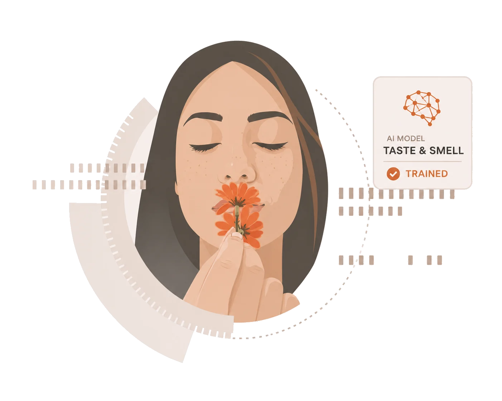
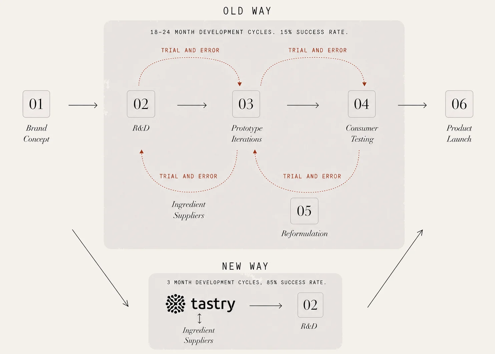
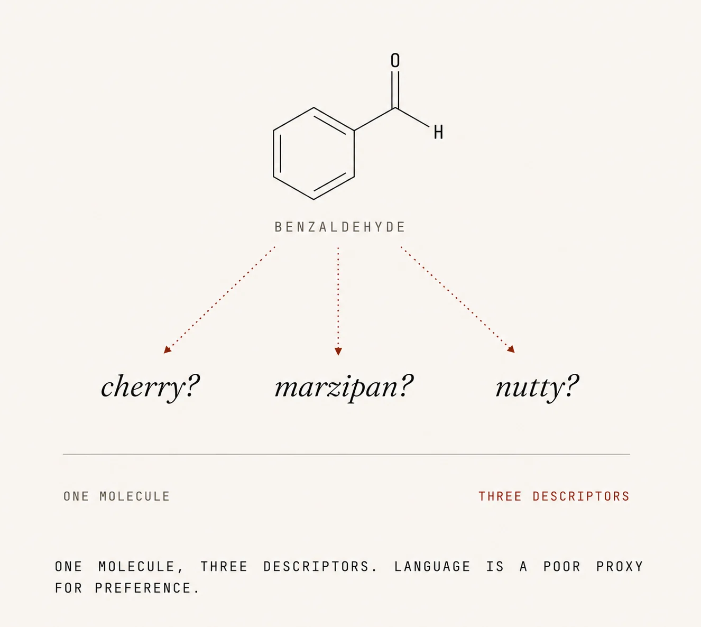
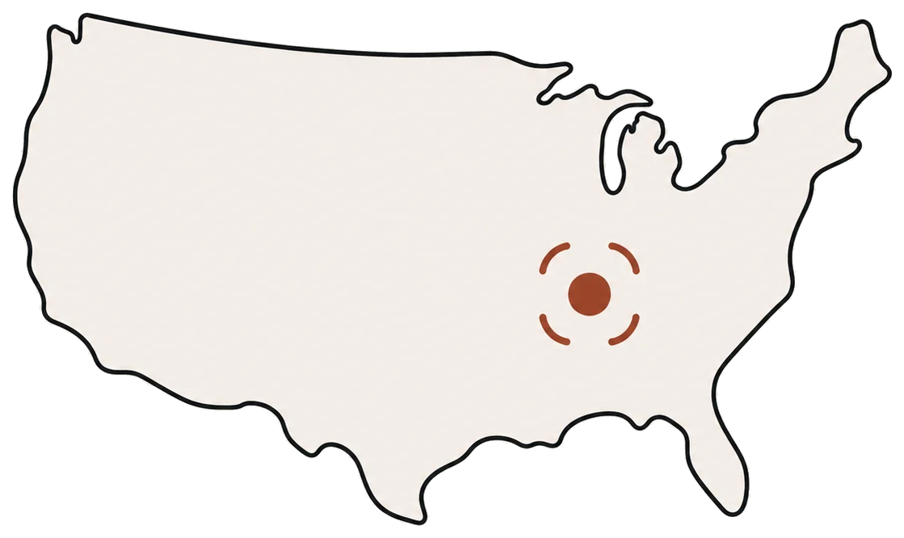
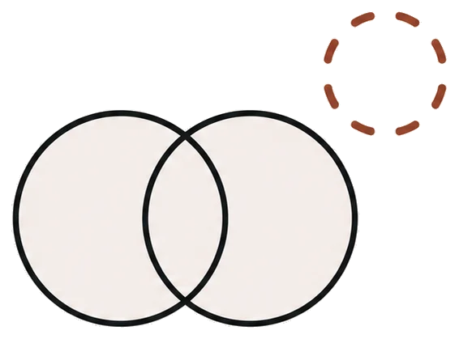
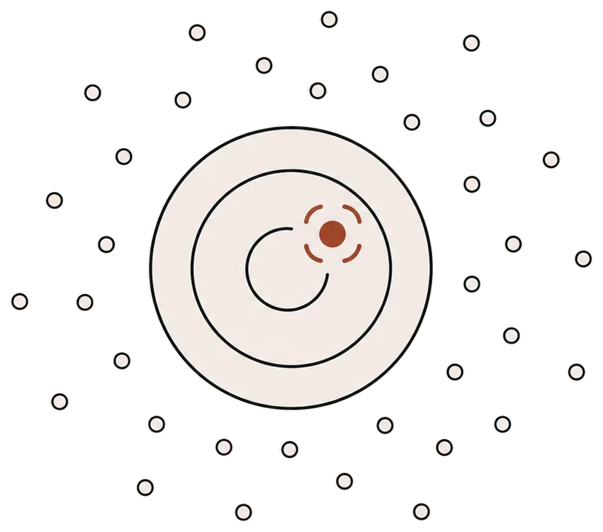
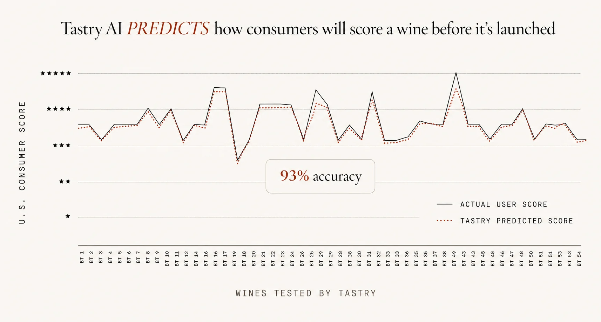

Tastry is the first-principles model for human taste, smell, and texture preference. We translate the chemistry inside a product into the preference it will create, before a single batch is ever made.

Consumer companies have spent decades guessing what people want. We built the model that knows. From chemistry, not from words.
Read the scienceFor every product on a shelf, there are five that failed quietly. Reformulations that lost consumers. Line extensions that missed. Innovation cycles that took eighteen months and ended in a focus-group shrug. The cost is structural. Teams iterate physically, validate after the fact, and discover what consumers actually wanted long after the budget is spent.

The cost of the broken cycle
For decades, the industry has tried to predict what people want by mapping language (fruity, smooth, clean) back to ingredients. That mapping does not hold up. A consumer who says they like cherry will reject a wine engineered to taste like cherry. The descriptor is the echo. The chemistry is the cause.
Tastry's model is built from the molecule up. We capture the full symphony of chemistry in a product in our proprietary in-house lab, then connect that chemistry directly to consumer preference. The output is a prediction of how a real audience will feel about a product that does not exist yet.
The result is something the industry has wanted for a century. A direct, causal link from a product's chemistry to a consumer's preference. Words do not predict it. Chemistry does.

The most advanced AI solution that creates digital twins of consumers and chemistry, built to design and deconstruct products and ingredients that consumers will love.
Every product captured as the full symphony of chemistry, not a sampled summary. The dataset is built category by category, geography by geography, and owned by Tastry.
Real human preference, modeled. Each twin learns from sensory and behavioral signal so we can predict what a population will feel about a product that does not exist yet.
Reformulate against cost, regulatory pressure, or supply changes without losing the consumer. The model knows which substitutions preserve preference and which destroy it.
U.S. Patent No. 11,847,684. Issued in the United States, China, Japan, and Canada.
Tastry does not replace one tool. It replaces the guesswork inside every stage of the development cycle, from forecasting demand to engineering the formulation to targeting the audience most likely to love it.

Forecast store, local, regional, and nationwide opportunity in real time, before a brief is written.
Read more »
Identify gaps in the market. Quantify overlap between SKUs. Brief the next launch with intent.
Read more »
Recipes engineered using real-time chemistry and preference data. A winning formulation in weeks, not years.
Read more »Match brands to their highest-value customers. Segment by predicted depth of preference, not by lifestyle.
Read more »Across all products tested with consumers in double-blind panels, Tastry's predicted preference scores matched actual consumer scores at 93%.

A single, specific flavor profile. The brief sent to the best flavor houses in the world.
Three of the largest flavor houses on earth. Nine attempts over eighteen months. None succeeded.
One pass through the model. From chemistry alone, with no language descriptors involved. Two weeks from brief to match.
Wine is the most chemically complex consumer product on earth. Hundreds of thousands of chemistry signals, every bottle different, preference impossible to predict by language. If the model could crack wine, it could crack anything. It did. Now it is coming for the rest of CPG.